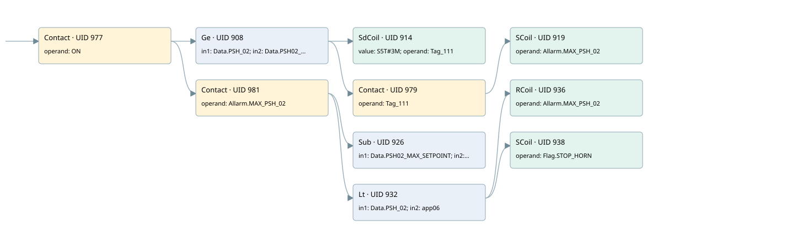

max pressure psh-02
allarms 3 · 검색 색인 순서 11 · 원본 내부 NID 추정 11
백업 PLF 원본의 3176591 바이트 위치에서 복원한 XML. 검색 문서 1989의 객체 키 161022007b6b000000000000와 연결했다. 이름 해석 15/15개. 남은 RefId는 상수 또는 미해석 참조다.
연결 구조 다시 그리기
원본 Part/PCon/Wire를 이용한 연결도다. TIA 화면의 래더 배치 또는 실행 결과를 재현한 그림은 아니다. 핀 연결은 아래 표와 원본 XML을 기준으로 읽는다. 노드 위에 마우스를 두면 피연산자 이름을 볼 수 있다.

접점·코일·블록과 피연산자
| Part UID | Gate | Negated 핀 | 연결 피연산자 |
|---|---|---|---|
| 977 | Contact | operand = ON | |
| 908 | Ge | in1 = Data.PSH_02; in2 = Data.PSH02_MAX_SETPOINT | |
| 914 | SdCoil | value = S5T#3M; operand = Tag_111 | |
| 979 | Contact | operand = Tag_111 | |
| 919 | SCoil | operand = Allarm.MAX_PSH_02 | |
| 981 | Contact | operand = Allarm.MAX_PSH_02 | |
| 926 | Sub | in1 = Data.PSH02_MAX_SETPOINT; in2 = 5; out = app06 | |
| 932 | Lt | in1 = Data.PSH_02; in2 = app06 | |
| 936 | RCoil | operand = Allarm.MAX_PSH_02 | |
| 938 | SCoil | operand = Flag.STOP_HORN |
접점 경로를 펼친 조건식
Contact·O/A·비교기의 원본 연결을 읽기 쉽게 펼친 보조 해석이다. POWER는 전원 레일 시작을 뜻한다. 호출 블록·에지·타이머의 내부 동작과 다중 쓰기 순서는 이 표로 실행 검증하지 않았다. 미해석 핀과 RefId는 원문 연결표에서 확인한다.
| UID | 동작 | 대상 | 원본 접점 경로 | 내용 |
|---|---|---|---|---|
| 914 | SdCoil | Tag_111 | (ON AND [Data.PSH_02 >= Data.PSH02_MAX_SETPOINT]) | 시간 동작 SdCoil; 타이머 의미 추가 확인 / 시간 인자 S5T#3M |
| 919 | SCoil | Allarm.MAX_PSH_02 | ((ON AND [Data.PSH_02 >= Data.PSH02_MAX_SETPOINT]) AND Tag_111) | 조건 성립 시 Set |
| 936 | RCoil | Allarm.MAX_PSH_02 | ((ON AND Allarm.MAX_PSH_02) AND [Data.PSH_02 < app06]) | 조건 성립 시 Reset |
| 938 | SCoil | Flag.STOP_HORN | ((ON AND Allarm.MAX_PSH_02) AND [Data.PSH_02 < app06]) | 조건 성립 시 Set |
원본 배선 연결
| Wire UID | 동일 Wire 연결 끝점 |
|---|---|
| 983 | Powerrail {} ↔ Part 977.in |
| 955 | ORef 940 (ON) ↔ Part 977.operand |
| 978 | Part 977.out ↔ Part 908.pre ↔ Part 981.in |
| 956 | ORef 941 (Data.PSH_02) ↔ Part 908.in1 |
| 957 | ORef 942 (Data.PSH02_MAX_SETPOINT) ↔ Part 908.in2 |
| 958 | Part 908.out ↔ Part 914.in ↔ Part 979.in |
| 959 | ORef 943 (S5T#3M) ↔ Part 914.value |
| 960 | ORef 944 (Tag_111) ↔ Part 914.operand |
| 961 | ORef 945 (Tag_111) ↔ Part 979.operand |
| 980 | Part 979.out ↔ Part 919.in |
| 963 | ORef 946 (Allarm.MAX_PSH_02) ↔ Part 919.operand |
| 965 | ORef 947 (Allarm.MAX_PSH_02) ↔ Part 981.operand |
| 982 | Part 981.out ↔ Part 926.en ↔ Part 932.pre |
| 966 | ORef 948 (Data.PSH02_MAX_SETPOINT) ↔ Part 926.in1 |
| 967 | ORef 949 (5) ↔ Part 926.in2 |
| 968 | Part 926.out ↔ ORef 950 (app06) |
| 969 | ORef 951 (Data.PSH_02) ↔ Part 932.in1 |
| 970 | ORef 952 (app06) ↔ Part 932.in2 |
| 971 | Part 932.out ↔ Part 936.in ↔ Part 938.in |
| 972 | ORef 953 (Allarm.MAX_PSH_02) ↔ Part 936.operand |
| 973 | ORef 954 (Flag.STOP_HORN) ↔ Part 938.operand |
식별자 해석 근거 15개
| ORef UID | RefId | 이름 | IdentXmlPart 파일 | 해석 방법 |
|---|---|---|---|---|
| 940 | 1 | ON | 0686-IdentXmlPart.xml | UID/RID + search-text + NID agreement |
| 941 | 94 | Data.PSH_02 | 0684-IdentXmlPart.xml | UID/RID + search-text + NID agreement |
| 942 | 95 | Data.PSH02_MAX_SETPOINT | 0684-IdentXmlPart.xml | UID/RID + search-text + NID agreement |
| 944 | 97 | Tag_111 | 0686-IdentXmlPart.xml | UID/RID + search-text + NID agreement |
| 943 | 96 | S5T#3M | 0683-IdentXmlPart.xml | literal candidate: UID/RID/NID + nearby named declarations + search-text agreement |
| 945 | 97 | Tag_111 | 0686-IdentXmlPart.xml | UID/RID + search-text + NID agreement |
| 946 | 98 | Allarm.MAX_PSH_02 | 0684-IdentXmlPart.xml | UID/RID + search-text + NID agreement |
| 947 | 98 | Allarm.MAX_PSH_02 | 0684-IdentXmlPart.xml | UID/RID + search-text + NID agreement |
| 948 | 95 | Data.PSH02_MAX_SETPOINT | 0684-IdentXmlPart.xml | UID/RID + search-text + NID agreement |
| 949 | 13 | 5 | 0683-IdentXmlPart.xml | literal candidate: UID/RID/NID + nearby named declarations + search-text agreement |
| 950 | 100 | app06 | 0685-IdentXmlPart.xml | UID/RID + search-text + NID agreement |
| 951 | 94 | Data.PSH_02 | 0684-IdentXmlPart.xml | UID/RID + search-text + NID agreement |
| 952 | 100 | app06 | 0685-IdentXmlPart.xml | UID/RID + search-text + NID agreement |
| 953 | 98 | Allarm.MAX_PSH_02 | 0684-IdentXmlPart.xml | UID/RID + search-text + NID agreement |
| 954 | 16 | Flag.STOP_HORN | 0684-IdentXmlPart.xml | UID/RID + search-text + NID agreement |
검색 코드 보조 자료
참조 명칭을 찾기 위한 자료이며 실행 순서나 AND/OR 관계는 위 연결표로 확인한다.
"on" "data".psh_02 "data".psh02_max_setpoint "tag_111" s5t#3m "allarm".max_psh_02 sub "data".psh02_max_setpoint 5 "data".psh_02 #app06 "allarm".max_psh_02 "flag".stop_horn #app06 "tag_111" "allarm".max_psh_02